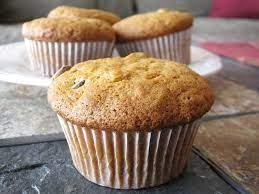

Recipe for muffins!
Click here to return to the main page

Description
While muffins may seem hard to make at first, they are actually one of the fastest recipes you could make!
Be sure to grab yourself a muffin tray for later!
ingredients
Here's a list of ingredients that you will need!
- 2 cups all-purpose flour
- 2 cups all-purpose flour
- ½ teaspoon salt
- ¾ cup white sugar
- 1 egg
- 1 cup milk
- ¼ cup vegetable oil
Cooking step by step
Once we've got all the ingredients, we can start working on it!
- Preheat oven to 400 degrees F (205 degrees C).
- Stir together the flour, baking powder, salt and sugar in a large bowl.
- Make a well in the center. In a small bowl or 2 cup measuring cup, beat egg with a fork.
- Stir in milk and oil.
- Pour all at once into the well in the flour mixture.
- Mix quickly and lightly with a fork until moistened, but do not beat.
- The batter will be lumpy. Pour the batter into paper lined muffin pan cups.
- Bake for 25 minutes, or until golden.
Conclusion
Now we sit back and enjoy ourselves some tasty muffins!